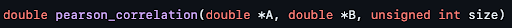
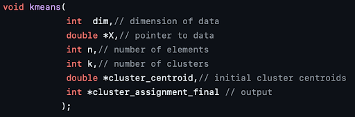
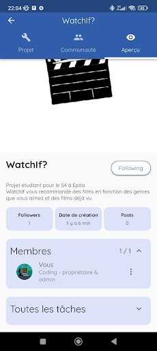

The Progress
-
The algorithme
For this part, we managed to build a film recommendation system using the collaborative filtering technique with the following main steps:
-
Creation of a utility matrix of notes between users and movies.

-
Find the similarity of the new user (or concerned user) with other users using the Cosine Centric Similarity (Pearson Correlation).

-
User grouping based on similarity using k means grouping (K-means Clustering).
 -
Prediction of films using collaborative filtering technique (low-ranking matrix factorization) based on the clusters obtained in step 3.

-
The top 10 recommended films will be printed online.

Result:


-
-
The communication
For this part, we talked about our project around us and we created a page on the CoMeet application, made by an Epita student, which allows us to share our projects. Thus, users can see the progress of the development of the application through posts.
We also created social media accounts representing the application. It is possible to find the links in the contacts, where we also find our email to contact us, or on the strip at the bottom of the site.
-
The data
Thanks to Thuy-Trang we have a dataset of over 9000 movies with their genres and notes on 5 give by users. This dataset will allow to train the recommendation algorithm.
Until now all the data was stored in csv format but to be in agreement with the server and facilitate queries Jimmy converted all the files into an SQL database.
Using a python code, parsing the data and then executing the a request was very simple and fast.Here is a graphical representation of the database, with the 4 tables that make up it:

-
The interface
Alban is the one who made this part in its entirety, with Jimmy’s help for the initial design.
We chose for the design part to use the Figma application which allowed us to get a clear idea of the direction we wanted to take the project.
Once this direction was established, we chose to use the glade application for the more concrete creation of the application. This choice is mainly due to the fact that the Gtk library has ways to directly recover data from glade files in order to encode the various features and graphic elements that we wanted to achieve for this interface. Thanks to this, our work was greatly simplified, despite some bugs slowing us down.
While working with glade allowed us to quickly create buttons, labels and any other interface element we needed, the C part, edited with VSCode and VIM, consisted mainly of connecting these different elements, whether between them or with our server and our algorithm, to obtain a coherent and functional whole.
Specifically, we first set up a main window to log in to his account, search for a movie and see all the information about him. We then added four secondary windows, each serving a different function.
The first is the login window. As its name indicates, it allows you to enter your username and password to access your space. There is also a button on this window to redirect to the account creation window.
The account creation window contains spaces to enter the desired username, the password and its confirmation. In case the username is already in use, or if the password and its confirmation are not identical, the window will display an error message in the form of a third popup.
The last window is an information popup, simply indicating that the logout was a success.
-
The network
This part was entirely made by Jimmy.
We first chose to implement a server with the TCP protocol seen during our Programming courses.
As explained in the defense report n°1 we used a function: select() which allowed to monitor a list of file descriptors in order to keep all users permanently connected to the server. But after thinking about and setting up shared queues to assign threads to each new connection, we realized that users needed to connect only to retrieve information from the database or to send it.
We have therefore opted for a simpler architecture where each new user who logs in is assigned a Thread, if there are some available, and will be able to log in. Once connected for the first time the client retains the information and for any future request they are sent upstream of the other requests to prove to the server that the client is connected.
We are aware that the server has many security vulnerabilities but for this project that will remain private we have decided not to focus too much on the issue of data security. For example, passwords are stored in “clear” in the database, meaning that they are not encrypted, which could be a point to change for a future project.
-
The website
First of all, before starting to write lines of code for the website, Sarah, the person in charge of this part had to see the bases of html and css since it is a topic not present in progress. Then we finally started writing a few lines. At the beginning, we were at least looking for a minimum functional site so we only used html.
First, before we start writing lines of code for the site, we added css code to do the layout. Without this, our site would have no decoration, which did not attract the eye of the user. Also, we thought about using JavaScript for our site, however, we were not able to handle this tool well... So we decided to use only html and css code.
We can see the latest version on the site itself.
-
The installer/ The launcher